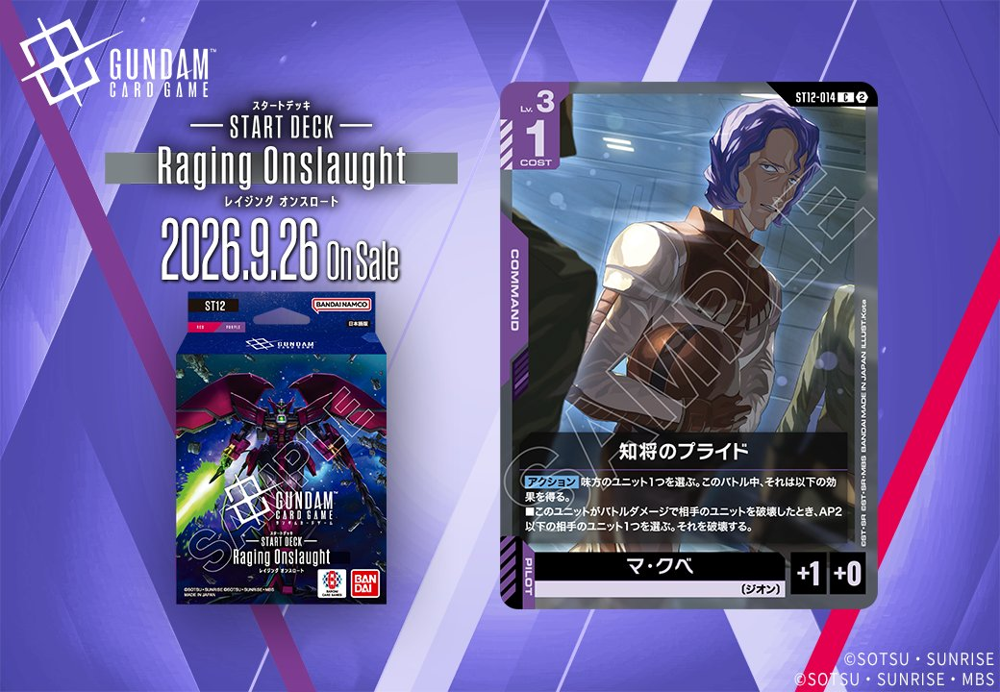

今回は、2026年9月26日発売の「ST12」および「ST14」から計3枚のカードを紹介します。中でも同日公開のUNIT「フルアーマー・ユニコーンガンダム(デストロイモード)」(ST14-006)とPILOT「バナージ・リンクス」(ST14-012)は、UNIT側のリンク条件「バナージ・リンクス」が成立する組合せとなっており、緑のUNITとPILOTがリンクで結ばれる一組として運用できます。加えて、紫のCOMMAND「知将のプライド」(ST12-014)も併せて確認していきます。

知将のプライド (ST12-014)
| 色 | 紫 | タイプ | COMMAND |
| Lv | 3 | コスト | 1 |
| パイロット | マ・クベ（補正 AP+1 / HP+0） 〔ジオン〕 | ||
効果: 【アクション】味方のユニット1つを選ぶ。このバトル中、それは以下の効果を得る。■このユニットがバトルダメージで相手のユニットを破壊したとき、AP2以下の相手のユニット1つを選ぶ。それを破壊する。
知将のプライド（ST12-014）はコスト1のコマンドで、【アクション】味方ユニット1つにバトルダメージで相手ユニットを破壊した際、AP2以下の相手ユニット1つを破壊する効果を付与する。バトル勝利と追加破壊を同時に狙える点が特徴で、低コストで盤面除去を稼げる。 関連カードのガンダム・バルバトスアダプト（GD03-056）の【配備時】1ダメージや三日月・オーガス（ST05-010）の【セット時】1ダメージで相手ユニットのHPを削っておけば、バトルダメージでの破壊を成立させやすく、追加破壊まで繋げやすい。 2026-09-26発売のST12収録カード。

バナージ・リンクス (ST14-012)
| 色 | 緑 | タイプ | PILOT |
| Lv | 4 | コスト | 1 |
| 補正 AP | 2 | 補正 HP | 1 |
| 特徴 | 〔民間〕、〔ニュータイプ〕 | ||
効果: 【バースト】このカードを手札に加える。【セット時】Lv.5以上の味方のユニット1つを選ぶ。このターン中、それはアクティブのAP5以下の相手のユニットをアタック先に選んでもよい。
COST1・AP2/HP1と軽量なLv.4パイロットで、【セット時】にLv.5以上の味方ユニット1つへ「アクティブのAP5以下の相手ユニットをアタック先に選んでもよい」を付与できる点が特徴。通常アタックできないアクティブなユニットを狙える攻めの選択肢になる。 同日公開の「フルアーマー・ユニコーンガンダム(デストロイモード)」(ST14-006)はLv条件を満たすため、これに搭載すれば【セット時】効果の対象にでき、【セット中】のバトルダメージ軽減を常駐させつつ運用できる。【バースト】で手札に戻る点もあわせ、2026-09-26発売の緑デッキで併用しやすい構成。

フルアーマー・ユニコーンガンダム(デストロイモード) (ST14-006)
| 色 | 緑 | タイプ | UNIT |
| Lv | 8 | コスト | 6 |
| AP | 3 | HP | 6 |
| 特徴 | 〔民間〕 | ||
| リンク条件 | 「バナージ・リンクス」 | ||
効果: 【配備時】自分のデッキを上から3枚見て、その中のカードを相手プレイヤーの人数と同じ数だけ公開して手札に加えてもよい。残ったカードは無作為に下に戻す。【セット中】ターン1回 このユニットは、これのAP以下の相手のユニットからバトルダメージを受けるとき、そのダメージを受けない。
Lv.8/COST6でAP3/HP6、【配備時】に相手プレイヤー人数分だけデッキトップ3枚から公開して手札に加えられ、通常戦でも1枚の手札補充が見込める緑の〔民間〕ユニットです。【セット中】でターン1回、自身のAP以下の相手ユニットからのバトルダメージを受けない耐性を持ち、HP6と合わせて低APのユニット相手には粘り強く盤面に残ります。 同日公開の「バナージ・リンクス」(ST14-012)とリンクが成立し、こちらの【セット時】はLv.5以上の味方に「アクティブのAP5以下の相手ユニットをアタック先に選んでよい」効果を付与します。両者はトリガータイミングが異なるため個別解決ですが、同一ユニット上で運用すればダメージ耐性と選択的アタックを併用でき、2026-09-26発売の緑デッキで併用候補となります。


関連カード
-
 三日月・オーガス(ST05-010)紫系デッキ内採用率36.9% (1716デッキ)
三日月・オーガス(ST05-010)紫系デッキ内採用率36.9% (1716デッキ) -
 ガンダム・バルバトスアダプト(GD03-056)紫系デッキ内採用率36.9% (1715デッキ)
ガンダム・バルバトスアダプト(GD03-056)紫系デッキ内採用率36.9% (1715デッキ) -
 ガンダム・バルバトス（第1形態）(GD02-054)紫系デッキ内採用率35.7% (1660デッキ)
ガンダム・バルバトス（第1形態）(GD02-054)紫系デッキ内採用率35.7% (1660デッキ) -
 グレイズ改(ST05-004)紫系デッキ内採用率32.5% (1514デッキ)
グレイズ改(ST05-004)紫系デッキ内採用率32.5% (1514デッキ) -
 百錬(ST05-006)紫系デッキ内採用率32.2% (1497デッキ)
百錬(ST05-006)紫系デッキ内採用率32.2% (1497デッキ) -
 シャア・アズナブル(ST03-011)緑系デッキ内採用率9% (419デッキ)
シャア・アズナブル(ST03-011)緑系デッキ内採用率9% (419デッキ) -
 シュウジ・イトウ(ST06-010)緑系デッキ内採用率0.6% (28デッキ)
シュウジ・イトウ(ST06-010)緑系デッキ内採用率0.6% (28デッキ) -
 ララァ・スン(GD02-089)緑系デッキ内採用率0.1% (3デッキ)
ララァ・スン(GD02-089)緑系デッキ内採用率0.1% (3デッキ) -
 シャリア・ブル（GQ）(GD02-090)緑系デッキ内採用率0.1% (3デッキ)
シャリア・ブル（GQ）(GD02-090)緑系デッキ内採用率0.1% (3デッキ) -
フルアーマー・ユニコーンガンダム(デストロイモード)(ST14-006)NEW緑系 — 同色・共通特徴: 民間（新カード）